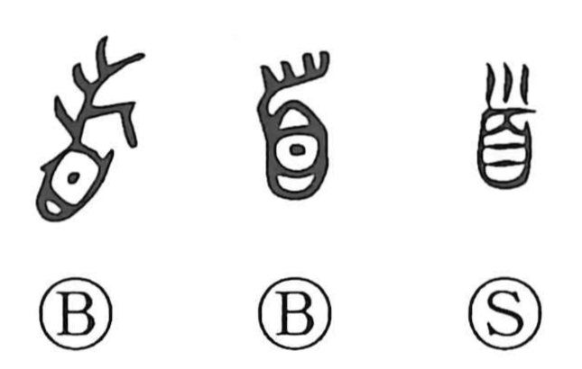

首

Kun: kubi, kashira | On: shu
head ・ neck ・ chief ・ first
Explanation
This character began as a pictograph of a human head: the eyes indicate the face, and the hair is shown above. From this head motif, related graphs arose—県 depicts a head hung upside down; 導 evokes advancing while bearing the head of someone from another clan to wield ritual power that exorcises evil; and 道 names the path purified by such rites. Because the head is the most vital part of the body, 首 naturally came to mean the leader or chief, and, esteemed as the foremost part, it further developed senses of “first” and “beginning.”